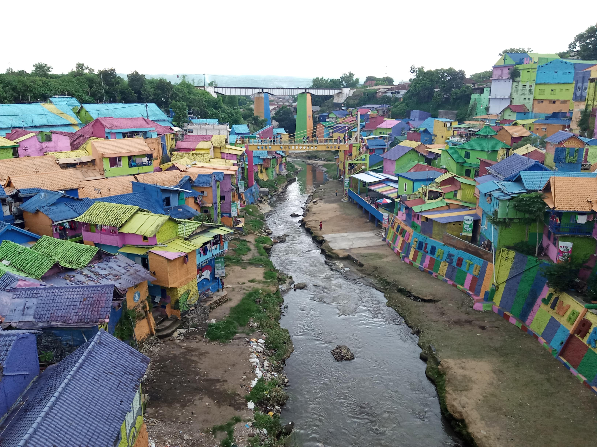
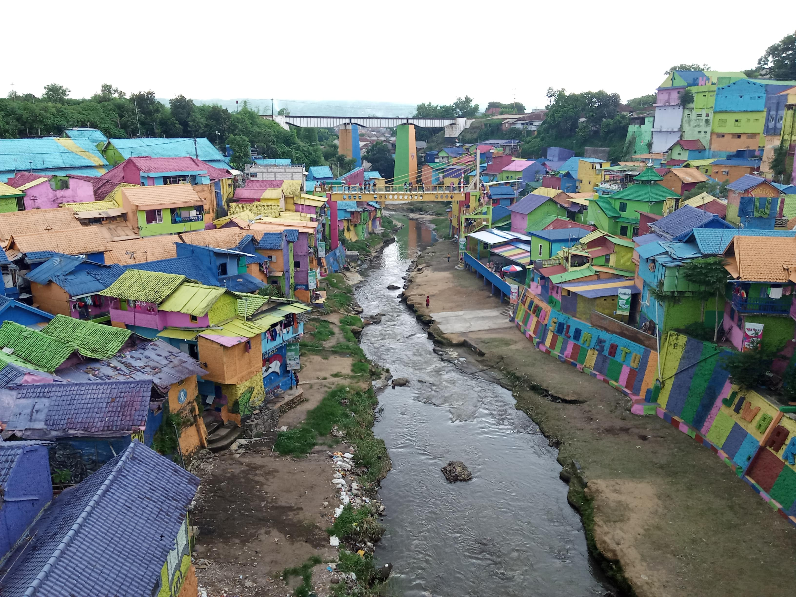
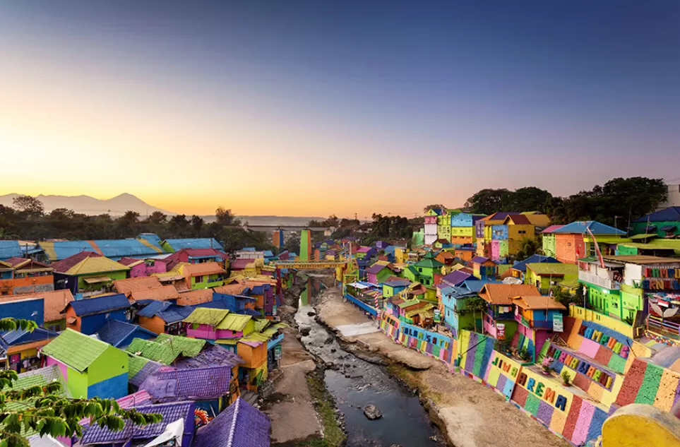
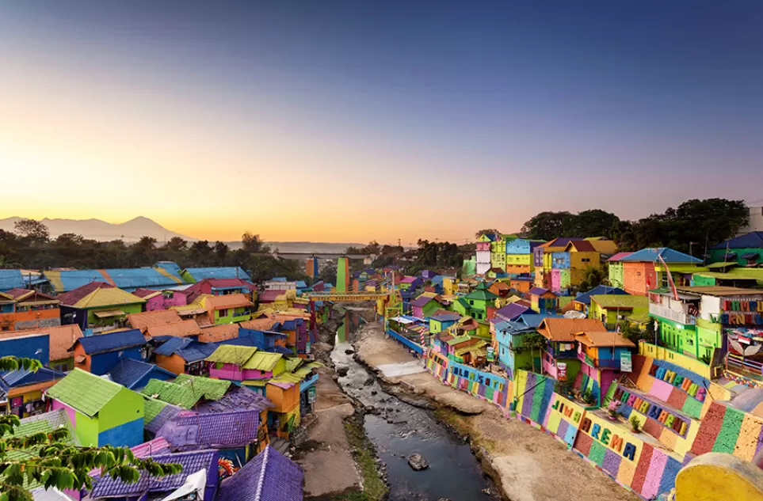

Abadikan Momen Penuh Warna
Jelajahi keindahan Kampung Jodipan melalui koleksi foto dan video kami.


/IMG_4410.jpg)


 

 

Suasana Jodipan dalam Gerak
Lihat lebih dekat kehidupan dan keindahan kampung kami.

Jelajahi keindahan Kampung Jodipan melalui koleksi foto dan video kami.
Lihat lebih dekat kehidupan dan keindahan kampung kami.